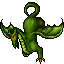
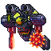
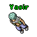
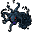
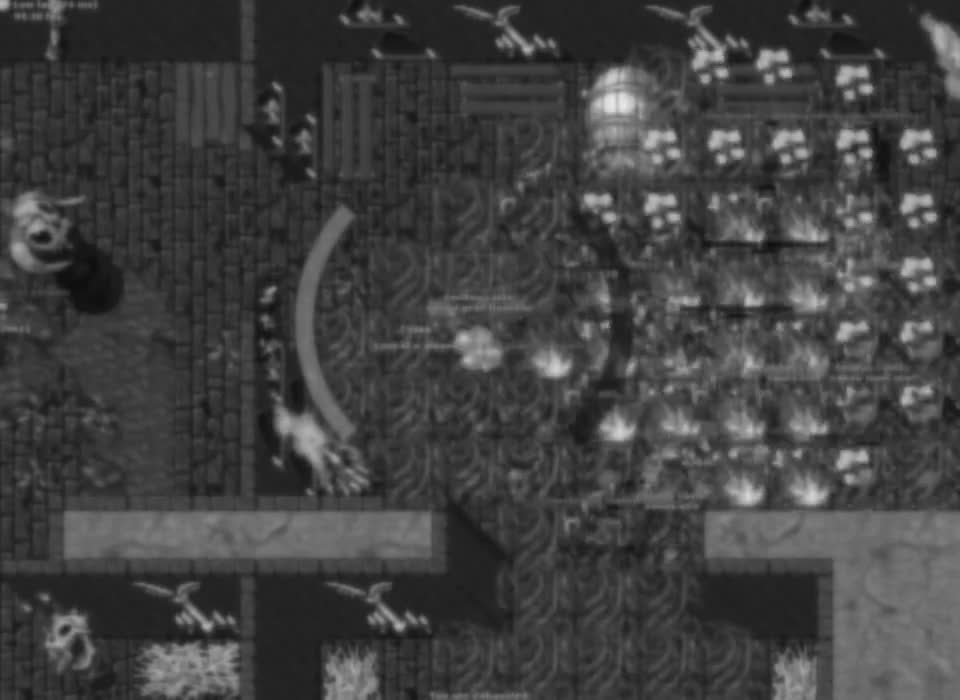

Home

Criatura boostadaDragon

Boss boostadoMaxxenius

YasirPresença no mundo

Dream CourtConforme o mundo
Calendário de eventosEventos de cada mundo
World ChangesMudanças no mundo
Mini World ChangesAtividades do mundo
02 — PREPARAÇÃO
Imbuements v2
“Grain by grain,
the hen fills her belly.”
TIBIA / MARKET− ×
⌕
Selecione um material no Tibia Tudo.
SIMULAÇÃO DO MARKETVampire Teeth
Quantidade25
Preço de exemplo2.400 gp
Tibia Tudo⌖
PowerfulVampirism
Clique no nome para copiar.Ao lado do Market. Sem Alt+Tab.
03 — SUA SESSÃOHunt
Hunt
Analyser v2
“much more than a split loot”
TRÊS TEXTOS. UMA ANÁLISE.EXEMPLO INTERATIVO
Party Hunt AnalyserCopy✓
Hunting AnalyserCopy✓
Input AnalyserCopy✓
min
XP / h4,82 kk
Dano / h3,60 kk
Balance / h386 k
Copie cada analyser no Tibia. O app reúne os três.
04 — SEU LOOTDelivery
Delivery
Items
Tasks e materiais de embuimentos.
CLASSIFICAÇÃO DO LOOT
TasksEmbuimentosOutros itens
05 — SEU ENCONTROHunt
Hunt
Creatures
Composição da hunt.
Dano por elemento.
DRAGON
FísicoFogo
Explore os elementos e as proteções.
06 — SUAS HUNTS
History
Revisite. Compare.
EXEMPLO DE COMPARAÇÃO
Sessão 01Sessão 02Sessão 03
07 — SUA PARTY
Tools
Shared XP.
Quem pode ir com você?
08 — SEU TEMPO
Timers
Contagens e avisos de áudio.
Toque para experimentar · sem áudio
09 — SEUS REGISTROS
Screenshots
Personagem. Tipo. Mês.

Screenshots / Personagem / Level Up
10 — SEU PERSONAGEM
Guild Stats
XP. Mortes. Progresso.